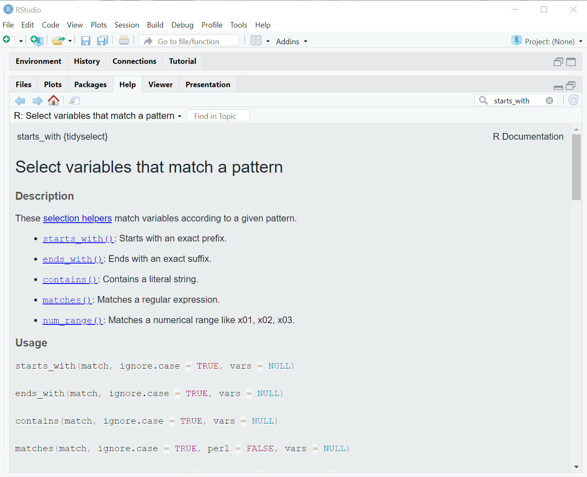

variety_trials <- read.csv(here::here("data", "trial_data.csv"))
weather <- read.csv(here::here("data", "weather_data.csv"))Introduction to Data Wrangling
Learning Goals
At the end of this lesson, you should:
- be able to select columns in R using
select() - be able to filter a data set using
filter() - be aware of how to conditionally create new variables using
case_when() - know to create new variables using
mutate() - be able to rename variables using
rename() - be able to sort a data set using
arrange() - be table to use
separate()to split up single variables into multiple variables
First, load libraries:
Next, import data:
What is going on with
here::here()?
The here() function is from the here package. This package simplifies working directory issues by setting it to where the nearest .Rproj files exists. When using a .qmd file, it looks for the .Rproj file that is the same directory as that file and moves up the directory tree.
Tidyverse notes
This lesson relies on group of packages called the “Tidyverse”, in particular dplyr and tidyr.
These packages follow a special set of rules called “non-standard evaluation” (sometimes abbreviated “NSE”). Tidyverse non-standard evaluation uses quotes far less often than “base R” (base R are package that are installed automatically when R is updated). It also uses indexing $ less frequently. You can name a variable directly instead of using dataset$var.
Many functions in the Tidyverse follow this structure:
function(dataset, action)
Where “dataset” is the data framed being input and “action” is whatever action is being taken.
Selection columns
The function select is used to specify column you want to keep (all rows are returned). Columns can be specified by name or position (i.e. the first two columns in the data set would be 1:2).
Select by name:
select1 <- select(variety_trials, variety, yield, grain_protein)
head(select1) variety yield grain_protein
1 LCS Iron 78.27131 14.250
2 LCS Iron 124.19389 14.592
3 LCS Iron 85.20458 15.105
4 LCS Iron 140.56490 14.364
5 10SB0087-B 94.18977 13.053
6 10SB0087-B 121.59047 13.794You can also select on what columns you do not want:
select2 <- select(variety_trials, -trial)
select3 <- select(variety_trials, -c(trial, plot))
head(select2); head(select3) rep entry variety yield grain_protein test_weight flag row range plot
1 1 1 LCS Iron 78.27131 14.250 NA <NA> NA NA NA
2 2 1 LCS Iron 124.19389 14.592 NA <NA> NA NA NA
3 3 1 LCS Iron 85.20458 15.105 NA <NA> NA NA NA
4 4 1 LCS Iron 140.56490 14.364 NA <NA> NA NA NA
5 1 2 10SB0087-B 94.18977 13.053 NA <NA> NA NA NA
6 2 2 10SB0087-B 121.59047 13.794 NA <NA> NA NA NA rep entry variety yield grain_protein test_weight flag row range
1 1 1 LCS Iron 78.27131 14.250 NA <NA> NA NA
2 2 1 LCS Iron 124.19389 14.592 NA <NA> NA NA
3 3 1 LCS Iron 85.20458 15.105 NA <NA> NA NA
4 4 1 LCS Iron 140.56490 14.364 NA <NA> NA NA
5 1 2 10SB0087-B 94.18977 13.053 NA <NA> NA NA
6 2 2 10SB0087-B 121.59047 13.794 NA <NA> NA NA
Note
The variables specified in select() will appear in the new data frame in exactly the order they were listed in the function call.
Sometimes, you might want to select many columns that share something common about their name:
select4 <- select(variety_trials, starts_with("r"))
head(select4) rep row range
1 1 NA NA
2 2 NA NA
3 3 NA NA
4 4 NA NA
5 1 NA NA
6 2 NA NAThis particular example is not all that useful, but you might have a large data set, with several dozen variables that all start with “snp” followed by some alpha-numeric code (e.g. “snp4738”). This function will enable you to select these column more efficiently than naming every single one.
There are more options for pattern matching on column names:
?tidyselect::starts_with #another option for searching help from the R console
Filtering rows
The function filter is used to specify rows you want to keep (all columns are returned). This command uses logical operators for deciding what to keep.
filter1 <- filter(variety_trials, variety == "Stephens") # match one name
filter2 <- filter(variety_trials, variety %in% c("Stephens", "Bobtail")) # match multiple names
filter3 <- filter(variety_trials, yield > 50 & grain_protein <= 14) # filter on multiple conditions
dim(filter1); dim(filter2); dim(filter3)[1] 4 11[1] 16 11[1] 1017 11
Note
It is also possible to select by numeric position:
select(variety_trials, c(1:3, 4))While selecting by numeric position works, it is an unreliable choice because it depends on column order or row order being exactly as you expect it. This may work the first time you write + run code, but it is likely to fail over time as you sort, augment or change data sets.
Creating new variables
You can quite create new variables with a mutate() function call:
mutate(dataset, var_name = variable)
Examples:
new_var <- rbinom(n = nrow(variety_trials), size = 1, prob = 0.5)
mutate1 <- mutate(variety_trials,
dataset = "example",
row_position = 1:n(),
range_new = range,
random_yield = yield + rnorm(n = n()),
binom_var = new_var,
yield_protein = yield + grain_protein)
table(new_var)new_var
0 1
958 924 head(mutate1) trial rep entry variety yield grain_protein
1 SWIdahoCereals_HRS_PAR_2016 1 1 LCS Iron 78.27131 14.250
2 SWIdahoCereals_HRS_PAR_2016 2 1 LCS Iron 124.19389 14.592
3 SWIdahoCereals_HRS_PAR_2016 3 1 LCS Iron 85.20458 15.105
4 SWIdahoCereals_HRS_PAR_2016 4 1 LCS Iron 140.56490 14.364
5 SWIdahoCereals_HRS_PAR_2016 1 2 10SB0087-B 94.18977 13.053
6 SWIdahoCereals_HRS_PAR_2016 2 2 10SB0087-B 121.59047 13.794
test_weight flag row range plot dataset row_position range_new random_yield
1 NA <NA> NA NA NA example 1 NA 78.86997
2 NA <NA> NA NA NA example 2 NA 123.52200
3 NA <NA> NA NA NA example 3 NA 86.45927
4 NA <NA> NA NA NA example 4 NA 140.69243
5 NA <NA> NA NA NA example 5 NA 95.37555
6 NA <NA> NA NA NA example 6 NA 122.33669
binom_var yield_protein
1 0 92.52131
2 1 138.78589
3 1 100.30958
4 1 154.92890
5 0 107.24277
6 0 135.38447This created 6 new variables:
- dataset which is a character with the value “example” for all rows
- row_position providing the row number, starting at 1 and ending at
n(), a function that returns the total nubmer of rows in the data frame - range_new which is a copy of the variable “range”
- random_yield which is the sum of the value for yield plus a random deviation from the function
rnorm. This operation is vectorized, using the ‘yield’ measurement for each row and generating a new random deviate for each row. - binom_var the binomial outcomes variable created in the
new_var ....statement. - yield_protein the addition of two variables in the data set (this is also vectorized, calculating this for each row)
These example cover the majority of what you are likely to experience: creating a constant, calculating new variables from existing variables, pulling in an external variables, and so forth.
This is equivalent to what was taught earlier using “$” notation:
mutate1 <- variety_trials # first, copy the data frame
mutate1$dateset <- "example"
mutate1$row_position <- 1:nrow(mutate1)
mutate1$range_new <- mutate1$range_new # note that NSE cannot be used
mutate1$random_yield <- mutate1$yield + rnorm(nrow(mutate1))
mutate1$binom_var = new_var
mutate1$yield_protein <- mutate1$yield + mutate1$grain_proteinThis can be a bit longer and cumbersome compared to mutate statements, but it does work.
case_when(), a special addition to mutate statements
Occasionally, you will need a define a variable conditionally, based on information from other variables. Here is an example for weather data. Here, a special minimum value is created where all data for “tmin_F” less than 50°F are set at 50:
weather <- mutate(weather, new_min = case_when(
tmin_F <= 50 ~ 50,
TRUE ~ tmin_F))Everything to the left of the tilde ~ is a logical expression to evaluate. Everything to the right of the tilde is the value to put if the logical expression evaluates to TRUE.
This can easily become more complex with the addition of other logical expressions and categorical levels to create.
If you have a categorical variable that needs further refinement (e.g. collapsing of multiple levels into one), check out the package forcats, which provides many functions for manipulating categorical (factor or character) variables.
Renaming Variables
Compared to mutate(), the function for renaming variables, rename(), is a breeze!
rename(dataset, new_name = "old_name")This is similar to variable assignment:
new_name <- old_nameExcept that quotes are always used when specifying the old variable name.
Example:
rename1 <- rename(variety_trials, cultivar = "variety")
head(rename1, 3) trial rep entry cultivar yield grain_protein
1 SWIdahoCereals_HRS_PAR_2016 1 1 LCS Iron 78.27131 14.250
2 SWIdahoCereals_HRS_PAR_2016 2 1 LCS Iron 124.19389 14.592
3 SWIdahoCereals_HRS_PAR_2016 3 1 LCS Iron 85.20458 15.105
test_weight flag row range plot
1 NA <NA> NA NA NA
2 NA <NA> NA NA NA
3 NA <NA> NA NA NAAlso, you can use rename notation in select statements:
rename2 <- select(variety_trials, cultivar = "variety", yield, protein = "grain_protein")This function selected the columns “variety”, “yield” and “grain_protein”, while renaming “variety to”cultivar” and “grain_protein” to “protein” - a handy shortcut.
Split up variables
You may encounter variables with information about multiple things. In agriculture, I see variables with values such as “Moscow_2021”, “Moscow_2022”, “StJohn_2021”, “StJohn_2022”. This variables is indicating multiple things - location and year in this exmample. This is a useful variable by itself, but a researcher might want to separate out location and year for other analytical purposes. The tidyr function separate() can do that.
The first column of “variety_trials” contains considerable information, all separated by an underscore:
variety_trials$trial[1][1] "SWIdahoCereals_HRS_PAR_2016"The first term is the program conducting the trial, the second is the crop grown, the third term is a location code, and the last term is the year. Let’s separate those terms into separate columns/variables.
Before running a separate() command, always check the variable to make sure it is structured as you expect.
Use distinct() to determine the unique observations for the column “trial” in the the object “variety_trials”.
distinct(variety_trials, trial) trial
1 SWIdahoCereals_HRS_PAR_2016
2 SWIdahoCereals_HWS_PAR_2016
3 SWIdahoCereals_SWS_PAR_2016
4 SWIdahoCereals_H_W_PAR_2017
5 SWIdahoCereals_HRS_PAR_2017
6 SWIdahoCereals_HWS_PAR_2017
7 SWIdahoCereals_SWS_PAR_2017
8 SWIdahoCereals_SWW_PAR_2017
9 SWIdahoCereals_H_S_PAR_2018
10 SWIdahoCereals_H_W_PAR_2018
11 SWIdahoCereals_SWS_PAR_2018
12 SWIdahoCereals_SWW_PAR_2018
13 SWIdahoCereals_H_S_WEI_2018
14 SWIdahoCereals_H_W_WEI_2018
15 SWIdahoCereals_SWS_WEI_2018
16 SWIdahoCereals_SWW_WEI_2018
17 SWIdahoCereals_HRS_PAR_2019
18 SWIdahoCereals_HRW_PAR_2019
19 SWIdahoCereals_HWS_PAR_2019
20 SWIdahoCereals_HWW_PAR_2019
21 SWIdahoCereals_SWS_PAR_2019
22 SWIdahoCereals_SWW_PAR_2019
23 SWIdahoCereals_HRS_PAR_2020
24 SWIdahoCereals_HRW_PAR_2020
25 SWIdahoCereals_HWS_PAR_2020
26 SWIdahoCereals_HWW_PAR_2020
27 SWIdahoCereals_SWS_PAR_2020
28 SWIdahoCereals_SWW_PAR_2020The variable variety_trials$trial uses an underscore to separate its components. However, one of the terms we mean to keep as one component does have an underscore inside of it, which will interpreted incorrectly as a term separator. The function gsub() can be used to fix this.
variety_trials$trial <- gsub(pattern = "_H_", replacement = "_H-", x = variety_trials$trial)Now, separate() will split the variable into 4 components:
variety_trials <- separate(variety_trials, trial,
into = c("program", "crop", "location", "year"),
sep = "_",
remove = FALSE)The argument remove = FALSE indicates that we want to keep the input variable (“trial”). By default, it would be removed.
The opposite function is tidyr::unite() which will paste these variable together, separate by any character string you specify. unite() also can ignore missing data when pasting information together, avoiding this unfortunate result: “some.var_NA_NA_another.var”. You would get “some.var_another.var” instead.
Sorting a data set
Prior to dplyr, sorting in R was a nightmare. Excel makes this so easy! Why was R torturing us??? But, dplyr has made this much easier:
arrange(dataset, variable1, variable2, ....)You can sort on as many variables as you like! It will sort on the first variables listed and within that, the second variable listed, and so on.
Example;
arrange1 <- arrange(variety_trials, variety, yield)Output file
Let’s output this object to file so we can use it later.
write.csv(variety_trials, here::here("outputs", "variety_trials_clean.csv"), row.names = FALSE)The pipe
The pipe operator %>% or its newer replacement |> are magic, or at least, they make our (data wrangling) lives so much easier.
The pipe operator works as thus:
operation_1 %>% operation_2One operation can be performed (e.g. a select() command), and that resulting data frame is passed on to the next operation (e.g. filter()).
Example: filter then sort
pipe1 <- filter(variety_trials, yield < 75) %>% arrange(variety)The data set is not named in the second operation because it is assumed to be dataset provided in the first operation. Whatever is being output directly left of the pipe operator is in the input data set.
We can take this even further by making the first operation our addition of the data set to the pipes:
pipe2 <- variety_trials %>% filter(yield < 75) %>% arrange(variety)The pipe has made data wrangling so much easier! Before the pipe, each of these operations can be specified separately with its own object. So when you were done, you had roughly 50 objects in your environment, 48 of which were not needed anymore.
It also saved us from the “parentheses cascade” where one function is nested inside another function, which is nested within another, and so forth. It can be difficult to ascertain what parentheses belong to what operation, which often leads to coding errors. In a set of nestd functions, the inner functions are first executed and the outer functions are executed last. no longer had any sense of which set of parentheses belong to which operation.

Putting it all together
What going on this notation?
tibble::rownames_to_column()This is a normal function call (the function being rownames_to_column()), and it is specifying that the package where this function resides is tibble (a tibble is the Tidyverse alternative to the data frame).
You want to use this notation in 2 circumstance:
You don’t want to load the entire package with a
library()call, especially if you only need one function from itThe name of the function you want to call from a package conflicts with function names from another package. A very common example is
filter()- this is a dplyr function, but it is also a base R function. Sometimes, you may receive a very puzzling error when usingfilter()that essentially is indicating that the wrong package was used. Using notation likedplyr::filter()clarified to R that you want to use the dplyr version offilter(). By default, the most recent package loaded overrides other function name conflicts, but sometiimes, it’s helpful to be unambiguous in your R function calls.